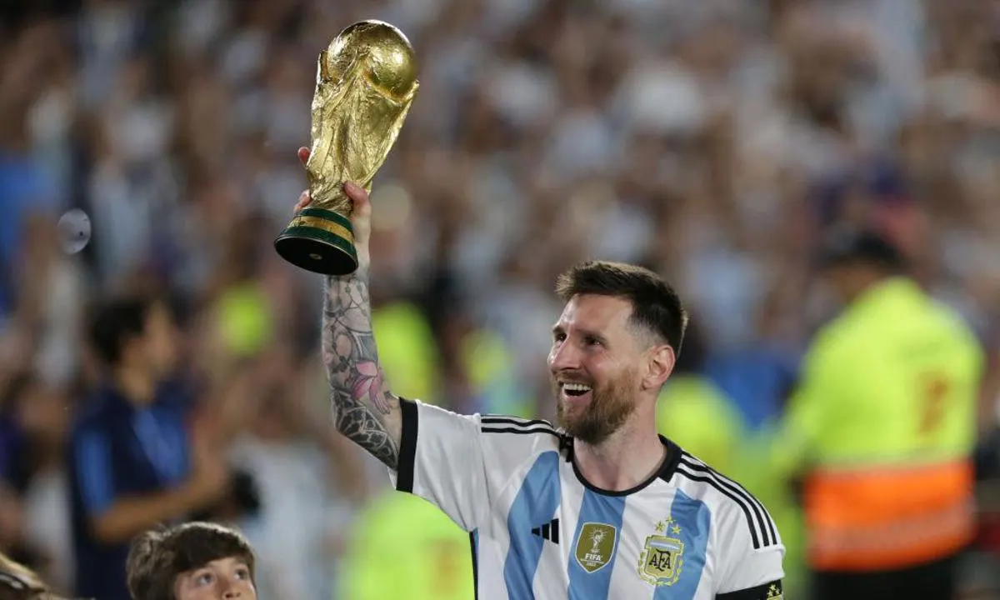
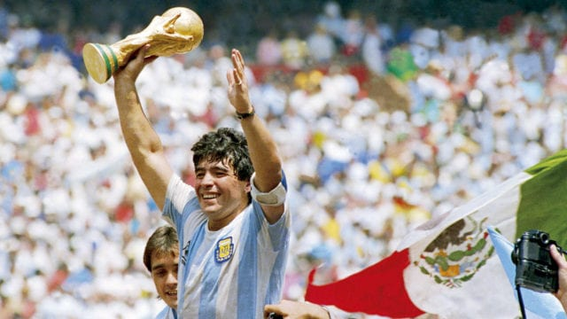
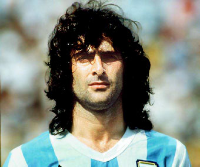

Lionel Messi
(Lionel Andrés Messi; Rosario, Santa Fe, 1987) Futbolista argentino. Poseedor de una habilidad técnica excepcional, una endiablada velocidad y una inventiva inagotable, desde que llegó de la mano de sus padres al F.C. Barcelona, con 13 años de edad, realizó una carrera vertiginosa por las diferentes categorías hasta el primer equipo, en el que debutó con apenas 16 años en un partido amistoso ante el Oporto. En 2004, con 17 años, Leo Messi jugó su primer encuentro oficial de la Liga española. Con 18 años le llegó su consagración internacional: formó parte de la selección argentina, campeona en el Mundial Juvenil Sub-20 de Holanda, disputado en 2005.
Diego Maradona
(Buenos Aires, 1960 - Dique Luján, 2020) Futbolista argentino, uno de los más grandes de la historia, comparado a menudo con el legendario Pelé. Si bien su habilidad con el balón y su depurada técnica igualaron la del brasileño, la trayectoria de Maradona fue mucho más irregular: su carácter difícil, los problemas de salud y la adicción a las drogas malograron parte de su carrera, pero no impidió que su genialidad brillase en numerosas ocasiones. Tras ganar en 1979 el campeonato mundial juvenil con la selección de su país y triunfar dos años después en el Boca Juniors, inició un periplo europeo que lo llevó al F.C. Barcelona (1982-84), el Nápoles (1984-91) y el Sevilla (1992-93). De regreso a Argentina jugó en el Newell's Old Boys y en el Boca Juniors antes de retirarse en 1997. Con la selección argentina participó en cuatro mundiales y se alzó con el título mundial en el de México (1986), en el que tuvo una portentosa e inolvidable actuación.
Mario Kempes

(Bell Ville, 1954) Futbolista argentino. Cursó los estudios primarios en una escuela pública de su ciudad natal y, casi a la vez, empezó a jugar al fútbol en el equipo de su barrio, el Platense, del que pasaría al Talleres de Bell Ville, después al Córdoba y más tarde al Rosario Central. En 1974 le llegó su gran oportunidad al ser seleccionado para jugar la Copa del Mundo, celebrada en Alemania. Y en 1976 debutó en el fútbol español al fichar por el Valencia. Su primera temporada en el club valenciano no pudo ser mejor, ya que consiguió el "Pichichi" al marcar 24 goles, título que volvió a ganar en 1978, con una marca de 28 tantos. Al finalizar la liga fue convocado por el seleccionador argentino Menotti para intervenir en el Mundial que se disputó en su país de origen, en 1978.